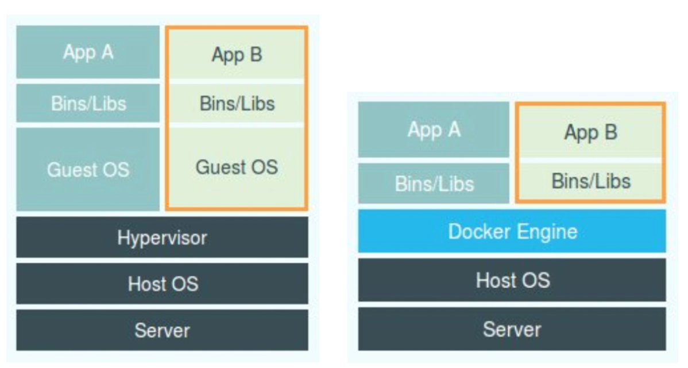

The ins and outs of the “Container” technology:
- The rise of Container technology stems from the popularization of
PaaStechnology; - The Docker project released by Docker Company has a milestone significance;
- The Docker project solves the fundamental problem of application packaging through “container images”;
- he container itself has no value, what is valuable is the “container orchestration”.
Containers are actually a sandbox technology. As the name suggests, a sandbox is a technology that can “package” your application like a container. In this way, applications and applications will not interfere with each other because there is a boundary; and applications that are packed into containers can also be easily moved around, which is the ideal state of PaaS.
Realizing the “Boundary”
Suppose, now you want to write a small program that calculates addition. The input required by this program comes from a file, and the result after the calculation is completed is output to another file.
Since computers only know 0s and 1s, no matter which language is written this code, it needs to be translated into binary files in some way in order to run in the computer operating system. In order to make these codes run normally, we often need to provide them with data, such as the input files required by our addition program. These data plus the binary file of the code itself, placed on the disk, is what we usually call a “program”, also called the executable image of the code (executable image).
Then, we can run this “program” on the computer.
First, the operating system finds that the input data is stored in a file from the “program”, so the data is loaded into memory and ready for use. At the same time, the operating system has read the instruction to calculate the addition. At this time, it needs to instruct the CPU to complete the addition operation. The CPU cooperates with memory to perform addition calculations, and uses registers to store values, and memory stacks to store executed commands and variables. At the same time, there are still open files in the computer, and various I/O devices are constantly calling to modify their state.
In this way, once a “program” is executed, it changes from a binary file on disk to a collection of information such as data in computer memory, values in registers, instructions in stacks, opened files, and the state of various devices. After such a program runs, the sum of the computer execution environment is: process.
Therefore, for a process, its static performance is a program, which usually stays on the disk quietly; once it runs, it becomes the sum of the data and state in the computer, which is its dynamic performance .
The core function of container technology is to create a “boundary” for a process by constraining and modifying the dynamic performance of the process.
For most Linux containers such as Docker, Cgroups technology is the main method used to create constraints, while Namespace technology is the main method used to modify the process view.
Namespace
The way Namespace is used is also very interesting: it is really just an optional parameter for Linux to create a new process. We know that the system call to create a process in a Linux system is clone(), and when we use the clone() system call to create a new process, we can specify the CLONE_NEWPID parameter in the parameters, such as:
int pid = clone(main_function, stack_size, CLONE_NEWPID | SIGCHLD, NULL); At this time, the newly created process will “see” a brand new process space, and in this process space, its PID is 1. The reason why I say “see” is because this is just a “gaze”. In the real process space of the host, the PID of this process is still a real value, such as 100.
In addition to the PID Namespace we just used, the Linux operating system also provides Namespaces such as Mount, UTS, IPC, Network, and User, which are used to “obfuscate” various process contexts.
For example, Mount Namespace is used to allow the isolated process to only see the mount point information in the current Namespace; Network Namespace is used to allow the isolated process to see the network devices and configurations in the current Namespace.
This is the most basic implementation principle of Linux containers.
Therefore, the concept of Docker container, which sounds mysterious and mysterious, is actually a set of Namespace parameters that need to be enabled for this process when creating a container process. In this way, the container can only “see” the resources, files, devices, states, or configurations defined by the current Namespace. For the host and other unrelated programs, it is completely invisible. Therefore, a container is actually a special process.
When it comes to the idea of “dividing a separate space for the process”, I believe you will definitely think of virtual machines. Also, you should have seen a comparison chart of virtual machines and containers as below before.

On the left side of this picture, the working principle of the virtual machine is drawn. Among them, the software called Hypervisor is the most important part of the virtual machine. It simulates various hardware required to run an operating system through hardware virtualization, such as CPU, memory, I/O devices, and so on. Then, it installs a new operating system, the Guest OS, on these virtual hardware. In this way, the user’s application process can run in this virtual machine, and it can only see the files and directories of the Guest OS and the virtual devices in this machine. This is why virtual machines can also act to isolate different application processes from each other.
On the right side of the picture, the Hypervisor is replaced with a piece of software called Docker Engine. This is why many people refer to the Docker project as a “lightweight” virtualization technology, which actually puts the concept of a virtual machine on a container.
However, this statement is not rigorous.
After understanding how namespaces work, you will understand that unlike real virtual machines, when using Docker, there is no real “Docker container” running inside the host. The Docker project helps users start the original application process, but when creating these processes, Docker adds various Namespace parameters to them. At this time, these processes will feel that they are the No. 1 process in their respective PID Namespaces, and can only see the directories and files mounted in their respective Mount Namespaces, and can only access network devices in their respective Network Namespaces, as if running In a “container”, isolated from the world.
In this comparison diagram of virtual machine and container technology, Docker Engine or any container management tools should not be placed in the same position as the hypervisor, because they are not responsible for the isolation environment of the application process like the hypervisor, nor do they create any entity’s “container”. It is the host operating system itself that is really responsible for the isolation environment. Docker should be drawn at the same level as the application and next to it. This means that the user’s application process running in the container, like other processes on the host, is uniformly managed by the host operating system, but these isolated processes have additionally set Namespace parameters. The role played by the Docker project here is more of a bypass-style auxiliary and management work.
Compared with virtualization technology, the isolation mechanism based on Linux Namespace also has many shortcomings. The main problem is that the isolation is not complete.
- First of all, since the container is just a special process running on the host, the operating system kernel of the same host is still used between multiple containers.
- Secondly, in the Linux kernel, there are many resources and objects that cannot be namespaced, the most typical example is: time. This means that if the program in your container modifies the time using the settimeofday(2) system call, the time of the entire host will be modified accordingly, which is obviously not in line with user expectations. Compared with the freedom of tossing around in a virtual machine, when deploying an application in a container, “what can be done and what cannot be done” is a problem that users must consider. So set ReadOnly when mounting localtime.
The container is a single process. For example, I have an image that integrates jdk, netstat, ping, etc. Although the container starts with a java process, I can enter the container to execute various commands, such as netstat, etc. Are these commands running while the container is running?
is running. But they are not controlled by docker, like wild children. So single process means that not only one process can be run, but only one process is controllable.
Cgroups
The full name of Linux Cgroups is Linux Control Group. Its main function is to limit the upper limit of resources that a process group can use, including CPU, memory, disk, network bandwidth, and so on. In addition, Cgroups can prioritize, audit, and suspend and resume processes.
In Linux, the operation interface exposed by Cgroups to users is the file system, that is, it is organized in the form of files and directories under the /sys/fs/cgroup path of the operating system. On an Ubuntu 16.04 machine, I can display them with the mount command, which is:
$ mount -t cgroup
cpuset on /sys/fs/cgroup/cpuset type cgroup (rw,nosuid,nodev,noexec,relatime,cpuset)
cpu on /sys/fs/cgroup/cpu type cgroup (rw,nosuid,nodev,noexec,relatime,cpu)
cpuacct on /sys/fs/cgroup/cpuacct type cgroup (rw,nosuid,nodev,noexec,relatime,cpuacct)
blkio on /sys/fs/cgroup/blkio type cgroup (rw,nosuid,nodev,noexec,relatime,blkio)
memory on /sys/fs/cgroup/memory type cgroup (rw,nosuid,nodev,noexec,relatime,memory)
...As you can see, there are many subdirectories such as cpuset, cpu, and memory under /sys/fs/cgroup, also called subsystems. These are the types of resources that my machine can currently limit by Cgroups. Under the resource type corresponding to the subsystem, you can see the specific methods that this type of resource can be restricted. For example, for the CPU subsystem, we can see the following configuration files, this command is:
$ ls /sys/fs/cgroup/cpu
cgroup.clone_children cpu.cfs_period_us cpu.rt_period_us cpu.shares notify_on_release
cgroup.procs cpu.cfs_quota_us cpu.rt_runtime_us cpu.stat tasksIf you are familiar with Linux CPU management, you will notice keywords like cfs_period and cfs_quota in its output. These two parameters need to be used in combination and can be used to limit a process to a total of cfs_quota of CPU time within a period of time of cfs_period.
And how to use such a configuration file?
You need to create a directory under the corresponding subsystem, for example, we now enter the /sys/fs/cgroup/cpu directory:
root@ubuntu:/sys/fs/cgroup/cpu$ mkdir container
root@ubuntu:/sys/fs/cgroup/cpu$ ls container/
cgroup.clone_children cpu.cfs_period_us cpu.rt_period_us cpu.shares notify_on_release
cgroup.procs cpu.cfs_quota_us cpu.rt_runtime_us cpu.stat tasksThis directory is called a “control group”. You will find that the operating system will automatically generate the resource limit file corresponding to the subsystem in the newly created container directory. Now, we execute such a script in the background:
$ while : ; do : ; done &
[1] 226Obviously, it executes an infinite loop that can eat up the computer’s CPU to 100%, and based on its output, we can see that the process ID (PID) of this script running in the background is 226. In this way, we can use the top command to confirm whether the CPU is full:
$ top
%Cpu0 :100.0 us, 0.0 sy, 0.0 ni, 0.0 id, 0.0 wa, 0.0 hi, 0.0 si, 0.0 stAs you can see in the output, the CPU usage has reached 100% (%Cpu0 : 100.0 us). At this time, by viewing the files in the container directory, we can see that the CPU quota in the container control group has no limit (ie: -1), and the CPU period is the default 100 ms (100000 us):
$ cat /sys/fs/cgroup/cpu/container/cpu.cfs_quota_us
-1
$ cat /sys/fs/cgroup/cpu/container/cpu.cfs_period_us
100000Next, we can set limits by modifying the contents of these files. For example, to write 20 ms (20000 us) to the cfs_quota file in the container group:
$ echo 20000 > /sys/fs/cgroup/cpu/container/cpu.cfs_quota_usCombined with the previous introduction, you should be able to understand the meaning of this operation. It means that in every 100 ms, the process limited by the control group can only use 20 ms of CPU time, which means that this process can only use up to 20 ms of CPU time. 20% CPU bandwidth.
Next, we write the PID of the restricted process into the tasks file in the container group, and the above settings will take effect for the process:
$ echo 226 > /sys/fs/cgroup/cpu/container/tasks We can check it out with the top command:
$ top
%Cpu0 : 20.3 us, 0.0 sy, 0.0 ni, 79.7 id, 0.0 wa, 0.0 hi, 0.0 si, 0.0 stIt can be seen that the CPU usage of the computer immediately dropped to 20% (%Cpu0 : 20.3 us).
Except for the CPU subsystem, each subsystem of Cgroups has its own unique resource limitation capabilities, such as:
- blkio，which sets I/O limits for block devices, generally used for devices such as disks；
- cpuset，which allocates separate CPU cores and corresponding memory nodes for processes;
- memory，which sets a limit on memory usage for a process.
The design of Linux Cgroups is relatively easy to use. To understand it simply and rudely, it is a combination of a subsystem directory and a set of resource limit files. For Linux container projects such as Docker, they only need to create a control group (that is, create a new directory) for each container under each subsystem, and then after starting the container process, fill in the PID of the process to the corresponding Control group tasks file on it.
As for what value to fill in the resource files under these control groups, it depends on the parameters specified by the user when executing docker run, such as this command:
$ docker run -it --cpu-period=100000 --cpu-quota=20000 ubuntu /bin/bashAfter starting the container, we can confirm by checking the contents of the resource limit file in the “docker” control group in the CPU subsystem under the Cgroups file system:
$ cat /sys/fs/cgroup/cpu/docker/5d5c9f67d/cpu.cfs_period_us
100000
$ cat /sys/fs/cgroup/cpu/docker/5d5c9f67d/cpu.cfs_quota_us
20000This means that this Docker container can only use 20% of the CPU bandwidth.
A running Docker container is actually an application process with multiple Linux Namespaces enabled, and the amount of resources that this process can use is limited by the configuration of Cgroups.
This is also a very important concept in container technology, namely: the container is a “single process” model.
Since the essence of a container is a process, the user’s application process is actually the process with PID=1 in the container, and it is also the parent process of all other subsequently created processes. This means that in a container, you can’t run two different applications at the same time, unless you can find a common PID=1 program in advance to act as the parent process of two different applications, which is why many people will Use software such as systemd or supervisord instead of the application itself as the startup process of the container. But this is because the design of the container itself is to hope that the container and the application can have the same life cycle. This concept is very important for container orchestration. Otherwise, once there is a situation similar to “the container is running normally, but the application in it has already been suspended”, the orchestration system will be very troublesome to deal with.
Similar to the case of Namespace, Cgroups also have many imperfections in their ability to limit resources. The most mentioned issue is naturally the /proc file system.
As we all know, the /proc directory under Linux stores a series of special files that record the current kernel running state. Users can access these files to view information about the system and currently running processes, such as CPU usage, memory usage, etc. These files are also the primary source of data for the top command to view system information.
However, if you execute the top command in the container, you will find that the information it displays is actually the CPU and memory data of the host, not the data of the current container. The reason for this problem is that the /proc file system does not know what resource restrictions the user has placed on the container through Cgroups, that is, the /proc file system does not understand the existence of Cgroups restrictions.
In the production environment, this problem must be corrected, otherwise the information such as the number of CPU cores and available memory read by the application in the container is the data on the host, which will bring great confusion and confusion to the operation of the application. risk. This is also a common problem encountered by containerized applications in the enterprise, and it is another disadvantage of containers compared to virtual machines.
Of course, the CPU and memory seen by commands such as top in the container are information about the host. lxcfs can solve this problem.
Principle: top obtains data from the /prof/stats directory, so in principle, the container does not need to mount this directory of the host. lxcfs implements this function by mounting the host’s /var/lib/lxcfs/proc/memoinfo file to the /proc/meminfo location of the Docker container. When the process in the container reads the content of the corresponding file, the FUSE implementation of LXCFS will read the correct memory limit from the Cgroup corresponding to the container. This enables the application to obtain the correct resource constraint settings. In the kubernetes environment, it can also be used, run lxcfs in ds mode, and automatically inject the proc information that is sought into the container.